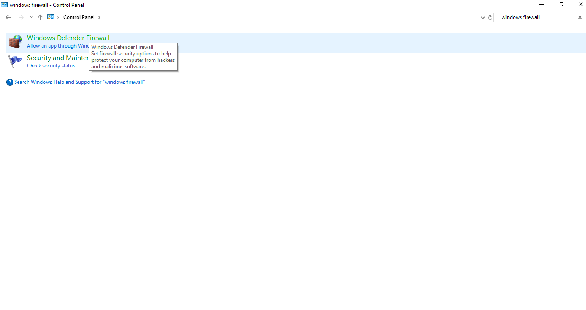
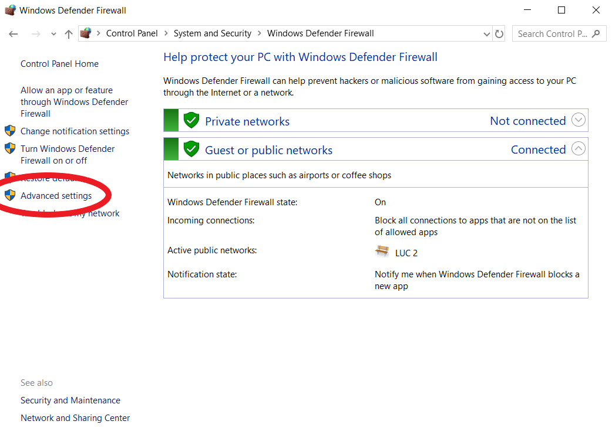
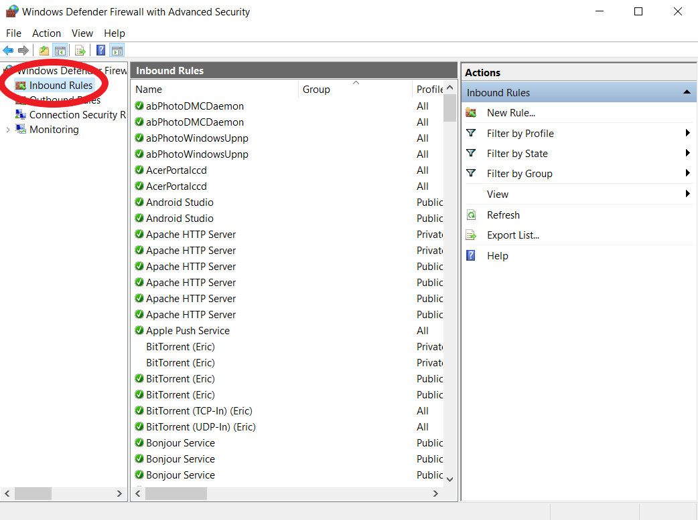
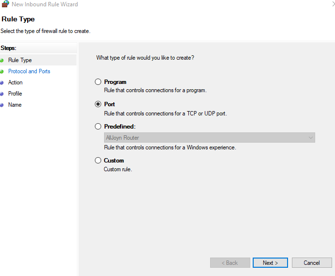
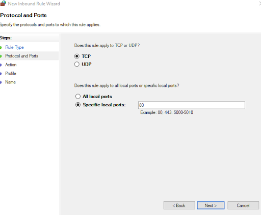
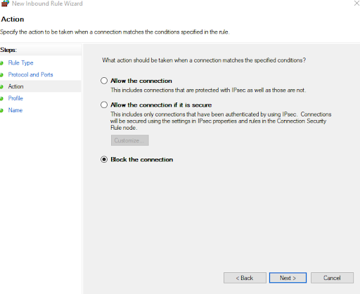
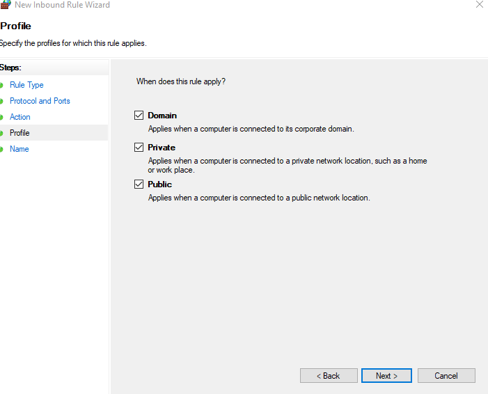
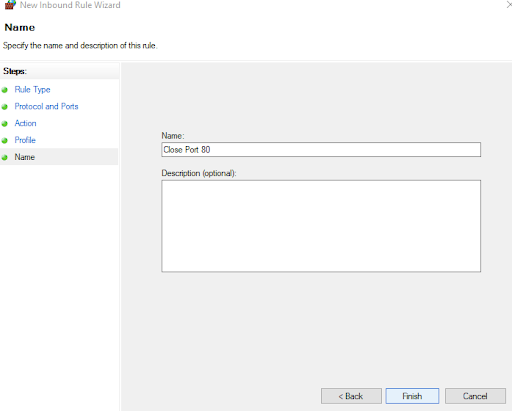

How to close open ports on Windows OS
Before we begin, we want to remind you to not get discouraged. This guide was specifically made to be accessible to a person of ANY experience level.
We would also like to remind you to always be cautious when closing specific ports. While open ports may cause security risks, closing the wrong port may cause issues with your computer.
These ports are some of the most commonly exploited: 0, 21, 22, 23, 25, 53, 443, 110, 135, 137, 138, 139, 1433, and any port above 49152.
While there is no guarantee that these ports being open causes a security threat, it is a very good idea to check.
Step 1: Navigate to your firewall.
Open your Control Panel. Once there, either click “Windows Defender Firewall” or use the search bar in the top right to search for it.

Step 2: Navigate to Inbound Rules.
Once in the "Windows Defender Firewall" window, click on “Advanced Settings” and then click on “Inbound Rules” on the top left.


Step 3: Create a new rule.
Either right click on “Inbound Rules” and press “New Rule”, or press the "New Rule" button on the top right. A window will pop up.
Step 4: Click the "Port" button and click "Next".

Step 5: Specify your port.
Make sure the “TCP” and “Specific Local Ports” buttons are checked. Type in the port or ports you want to close into the textbox and click "Next".
For multiple ports, enter the ports as a comma separated list

Step 6: Click “Block the Connection” and press "Next".

Step 7: Ensure 3 boxes are checked.
On the next page, "Domain", "Private", and "Public" should all be checked. Click "Next".

Step 8: Type "Close Port [Port]" in the "Name:" textbox.
Replace [Port], of course, with the port number you have closed. Once you press "Finish", the port will be closed!
